The Sonic the Hedgehog video game series is a long-running franchise developed by Sega, centered around Sonic, a blue anthropomorphic hedgehog known for his incredible speed. First introduced in 1991 as Sega's mascot and a rival to Nintendo’s Mario, the series quickly gained popularity for its fast-paced platforming gameplay, colorful graphics, and energetic music. Players typically control Sonic as he battles the evil Dr. Robotnik (also known as Dr. Eggman), who plots to conquer the world using robotic creations. Over the years, the series has expanded to include a wide cast of characters—like Tails, Knuckles, and Shadow—and has explored a variety of genres, from 2D side-scrollers to 3D action-adventure games. Despite ups and downs in critical reception, Sonic the Hedgehog remains one of the most iconic and enduring franchises in video game history.
Major Games
Sonic The Hedgehog

The first Sonic the Hedgehog game, released by Sega in 1991 for the Sega Genesis, introduced players to Sonic, a blue hedgehog with super speed, on a mission to stop the evil Dr. Robotnik from taking over the world. Robotnik has captured animals and transformed them into robotic minions to help him collect the powerful Chaos Emeralds. Set across seven vibrant zones—each divided into three acts—the game challenges players to navigate loops, springs, and hazards while freeing animals and collecting rings for protection. With its fast-paced platforming, iconic Green Hill Zone, and catchy soundtrack, the original Sonic the Hedgehog was both a critical and commercial success, helping to establish Sega as a major force in the gaming industry.
Sonic The Hedgehog 2
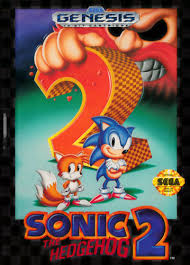Sonic the Hedgehog 2, released in 1992 for the Sega Genesis, is the sequel to the original hit and expanded on its predecessor with faster gameplay, new features, and the introduction of Sonic’s sidekick, Miles “Tails” Prower, a two-tailed fox who can fly. The game follows Sonic and Tails as they race through diverse zones to stop Dr. Robotnik’s latest plan: building the Death Egg, a massive space station, and turning animals into robots to fuel his army. Featuring improved graphics, more intricate level design, the iconic “Spin Dash” move, and a two-player mode, Sonic the Hedgehog 2 became one of the best-selling Sega Genesis games and is often praised as one of the greatest platformers of its era.
Sonic CD
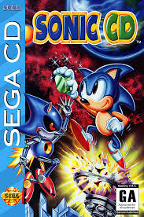Sonic CD, released in 1993 for the Sega CD, follows Sonic as he travels to the mysterious Little Planet, which appears over Never Lake once a year and holds the power to manipulate time through magical Time Stones. When Dr. Robotnik chains the planet and begins turning it into a mechanized fortress, Sonic sets out to stop him and save the planet’s future. Along the way, Sonic encounters Amy Rose, who is kidnapped by the mysterious Metal Sonic—Robotnik’s powerful robotic copy of Sonic. The game features a unique time travel mechanic, allowing players to explore past, present, and future versions of each level to achieve the best outcome. With its vibrant visuals, branching paths, and iconic soundtrack, Sonic CD is often praised for its creativity and remains a standout entry in the franchise.
Sonic The Hedgehog 3
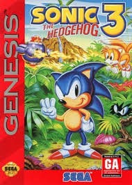Sonic the Hedgehog 3 is a 1994 platformer game developed by Sega for the Sega Genesis, continuing the adventures of Sonic and his sidekick Tails as they try to stop the evil Dr. Robotnik from rebuilding his Death Egg space station. Set on the floating Angel Island, the game introduces Knuckles the Echidna, the island’s guardian, who initially opposes Sonic due to Robotnik’s deception. Featuring new gameplay mechanics like elemental shields and expanded level designs, Sonic 3 builds on its predecessor with improved graphics, music, and storytelling. The game is also known for being the first part of a larger narrative completed in Sonic & Knuckles, which could be combined with Sonic 3 for an expanded experience.
Sonic and Knuckles
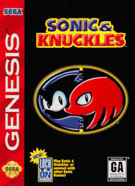Sonic & Knuckles, released in 1994 for the Sega Genesis, is a direct follow-up to Sonic the Hedgehog 3 and completes the story begun in that game. Players can control either Sonic or Knuckles, each with unique abilities—Sonic can use elemental shield powers, while Knuckles can glide and climb walls. The game takes place across several new zones on Angel Island as Sonic continues his mission to stop Dr. Robotnik from launching the Death Egg, while Knuckles defends the Master Emerald from threats. Notably, the cartridge features "lock-on technology," allowing it to connect with Sonic 3 to create Sonic 3 & Knuckles, a combined version with expanded levels and the full storyline. With its challenging gameplay and innovative design, Sonic & Knuckles is considered a landmark title in the series.
Sonic 3D Blast
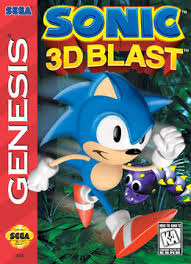Sonic 3D Blast, released in 1996 for the Sega Genesis and Sega Saturn, is an isometric platformer that marks a departure from the traditional 2D gameplay of earlier Sonic titles. In this game, Sonic travels to Flicky Island, where Dr. Robotnik has kidnapped the native Flickies—small birds capable of traveling through dimensional portals—and turned them into robots to aid his evil plans. Sonic must rescue the Flickies by destroying enemies and guiding the freed birds to safety across various zones. While it introduced 3D-style graphics and a new style of exploration, the game received mixed reviews for its controls and slower-paced gameplay, though it was praised for its music and ambition. Sonic 3D Blast stands out as a transitional title in the Sonic series, bridging the gap between 2D and 3D platforming.
Sonic Adventure
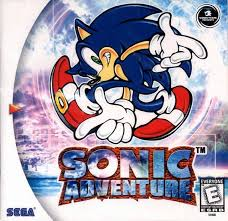Sonic Adventure, released in 1998 for the Sega Dreamcast, marked Sonic’s full leap into 3D gameplay, introducing a more cinematic and story-driven experience. Set in the expansive world of Station Square and surrounding areas, the game follows Sonic and five other playable characters—Tails, Knuckles, Amy, Big the Cat, and E-102 Gamma—as they each pursue their own missions connected to the return of the ancient creature Chaos, revived by Dr. Robotnik to conquer the world. Each character offers a unique gameplay style, from high-speed platforming to exploration and shooting. Sonic Adventure was praised for its ambition, voice acting, and dynamic soundtrack, though it also faced criticism for its camera issues and inconsistent gameplay quality. It remains a landmark title for the series, helping define Sonic's transition into 3D gaming.
Sonic Adventure 2
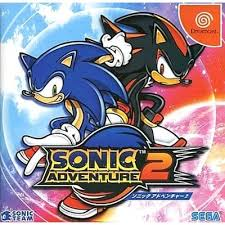Sonic Adventure 2, released in 2001 for the Sega Dreamcast, builds on its predecessor with a more focused, fast-paced experience and a split storyline featuring Hero and Dark campaigns. Players alternate between Sonic, Tails, and Knuckles on the Hero side, and Shadow the Hedgehog, Dr. Eggman, and Rouge the Bat on the Dark side, as both teams race to control or protect the powerful Chaos Emeralds. The game introduces Shadow as Sonic’s rival and explores themes of identity, sacrifice, and redemption, culminating in a battle to save Earth from the space station ARK’s destructive plan. With a mix of high-speed platforming, mech shooting, and treasure hunting gameplay, along with the popular Chao Garden life simulation mode, Sonic Adventure 2 became a fan favorite and is often regarded as one of the strongest 3D entries in the Sonic series.
Sonic Advance
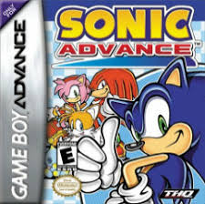Sonic Advance, released in 2001 for the Game Boy Advance, is the first Sonic the Hedgehog game developed for a Nintendo system and a return to classic 2D side-scrolling platforming with modern flair. The game features four playable characters—Sonic, Tails, Knuckles, and Amy—each with unique abilities that offer varied gameplay styles across vibrant, fast-paced levels. Players must stop Dr. Eggman’s latest scheme by collecting Chaos Emeralds and defeating enemies while navigating through loops, springs, and hazards. Sonic Advance was praised for blending the speed and style of the Genesis-era games with updated graphics, tight controls, and a catchy soundtrack, establishing a successful new handheld era for the Sonic franchise.
Sonic Advance 2
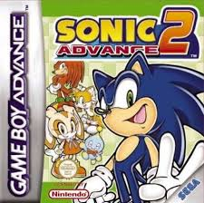Sonic Advance 2, released in 2002 for the Game Boy Advance, builds on the foundation of its predecessor with faster gameplay, larger levels, and improved visuals, emphasizing momentum-based platforming and speed. The game introduces Cream the Rabbit and her Chao companion, Cheese, as new playable characters alongside Sonic, Tails, and Knuckles—each offering distinct abilities. As Sonic and his friends race to stop Dr. Eggman's latest plan and rescue captured allies, players must collect seven Special Rings in each zone to access the Chaos Emeralds and unlock the true ending. Known for its challenging level design, smoother animations, and energetic soundtrack, Sonic Advance 2 is often regarded as one of the best entries in the Advance trilogy and a highlight of Sonic's 2D handheld era.
Sonic Heroes
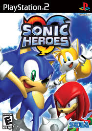Sonic Heroes, released in 2003 for multiple platforms including the GameCube, PlayStation 2, and Xbox, is a 3D platformer that introduces a unique team-based gameplay system. Players control one of four teams—Team Sonic, Team Dark, Team Rose, and Team Chaotix—each consisting of three characters with distinct roles: Speed, Power, and Flight. The story follows the teams as they pursue their own goals, eventually uncovering a larger plot involving the return of Metal Sonic, who has betrayed Dr. Eggman and seeks world domination. The game blends fast-paced action, puzzle-solving, and combat as players switch between teammates to navigate diverse levels. While praised for its colorful visuals, catchy soundtrack, and creative concept, Sonic Heroes received mixed reviews for its camera issues and occasional control frustrations. Despite this, it remains a memorable and ambitious entry in the Sonic series.
Sonic Advance 3
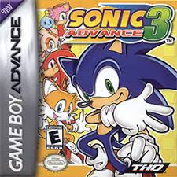Sonic Advance 3, released in 2004 for the Game Boy Advance, is the third and final installment in the Sonic Advance series, combining high-speed 2D platforming with a unique partner system. After Dr. Eggman shatters the world into pieces using a powerful device called the Gizoid, Sonic and his friends—Tails, Knuckles, Amy, and Cream—must team up in pairs to restore the world and stop his plans. Each duo offers different gameplay abilities and strategies, encouraging experimentation and replayability. The game features expansive levels, challenging boss fights, and hidden collectibles like Chao and Chaos Emeralds. Praised for its fast-paced gameplay, colorful graphics, and cooperative mechanics, Sonic Advance 3 delivered a strong conclusion to the handheld trilogy and remains a fan favorite among Sonic’s 2D adventures.
Sonic Rush
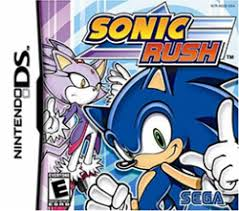Sonic Rush, released in 2005 for the Nintendo DS, is a high-speed 2D platformer that blends classic side-scrolling gameplay with 3D elements and introduces a new character, Blaze the Cat. The story follows Sonic and Blaze as they each try to stop Dr. Eggman and his alternate-dimension counterpart, Eggman Nega, from using the powerful Sol and Chaos Emeralds for their own evil plans. The game features two playable campaigns, with Sonic and Blaze each offering unique moves and perspectives on the story. Sonic Rush is known for its fast-paced action, stylish visuals, and energetic soundtrack by Jet Set Radio composer Hideki Naganuma. Its innovative “boost” mechanic, which allows players to blaze through levels at incredible speed, helped redefine 2D Sonic gameplay and earned the game praise as one of the best handheld entries in the franchise.
Shadow 05
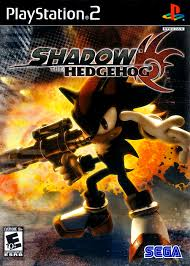Shadow the Hedgehog, released in 2005 for the GameCube, PlayStation 2, and Xbox, is a spin-off of the Sonic the Hedgehog series that focuses on Shadow, the mysterious anti-hero introduced in Sonic Adventure 2. The game explores Shadow's past and identity as he becomes caught between conflicting sides—G.U.N., Dr. Eggman, and an alien race called the Black Arms—following the return of their leader, Black Doom. Featuring a darker tone, branching storylines, and multiple endings, Shadow the Hedgehog allows players to choose Shadow's path as hero, villain, or neutral, affecting the outcome of the story. The gameplay combines traditional 3D platforming with combat elements, including the use of guns and vehicles—a controversial shift for the series. While the game received mixed-to-negative reviews for its tone, controls, and design, it remains a unique and polarizing entry that aimed to give depth to one of the franchise’s most complex characters.
Sonic 06
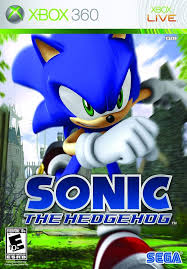Sonic the Hedgehog (2006), often referred to as Sonic '06, was released for the Xbox 360 and PlayStation 3 as a reboot intended to celebrate the franchise’s 15th anniversary. The game features three main storylines starring Sonic, Shadow, and new character Silver the Hedgehog, whose paths intertwine as they attempt to stop a catastrophic event involving time travel, the Flames of Disaster, and the awakening of a dark entity called Solaris. Set in the semi-realistic kingdom of Soleanna, the game mixes high-speed platforming with combat, exploration, and dramatic storytelling, including a controversial romance subplot between Sonic and a human princess named Elise. Rushed development led to numerous technical issues, bugs, and long load times, resulting in overwhelmingly negative reviews. Despite its ambitious scope and narrative, Sonic '06 is widely regarded as one of the most infamous and flawed entries in the series.
Sonic Rush Adventure
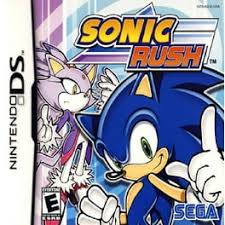Sonic Rush Adventure, released in 2007 for the Nintendo DS, is the sequel to Sonic Rush and continues the fast-paced 2D platforming gameplay with new seafaring elements and enhanced visuals. In this adventure, Sonic and Tails are transported to a mysterious island world after a storm, where they meet Blaze the Cat once again, now serving as a guardian of the Sol Emeralds. Together, they must stop a group of robotic pirates led by Captain Whisker and the returning villain Eggman Nega. The game introduces vehicle-based travel between islands using jet skis, hovercrafts, and submarines, adding exploration and mini-game mechanics to the traditional Sonic formula. With two playable characters, dynamic dual-screen action, and a lively soundtrack, Sonic Rush Adventure was praised for expanding on its predecessor’s strengths while offering a fresh and engaging handheld experience.
Sonic Unleashed
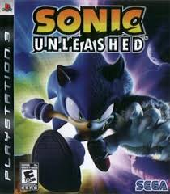Sonic Unleashed, released in 2008 for multiple platforms, blends fast-paced 3D platforming with beat-’em-up gameplay in a globe-trotting adventure to stop Dr. Eggman from awakening Dark Gaia, a monstrous entity threatening to destroy the world. After Eggman shatters the planet and transforms Sonic into a werehog—a beastly form with enhanced strength—Sonic must restore the broken continents using the power of the Chaos Emeralds while uncovering the mystery behind his transformation. The game features two distinct gameplay styles: high-speed daytime stages showcasing Sonic’s signature running action, and slower, combat-heavy nighttime stages starring the Werehog. Powered by the new “Hedgehog Engine,” Sonic Unleashed impressed with its cinematic visuals and smooth transitions between 2D and 3D gameplay. While the Werehog sections received mixed reviews, the daytime levels were widely praised and helped lay the foundation for future modern Sonic titles.
Sonic Colors
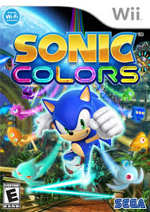Sonic Colors, released in 2010 for the Nintendo Wii and DS, is a vibrant 3D platformer that follows Sonic as he ventures into Dr. Eggman's interstellar amusement park to rescue an alien race called the Wisps, whose energy is being harvested for evil purposes. The game combines high-speed platforming with creative level design and introduces the Wisp power-ups, which grant Sonic temporary abilities like laser bursts, drilling, and hovering, adding variety and strategy to the gameplay. Sonic Colors received praise for its colorful visuals, polished controls, upbeat soundtrack, and lighthearted tone, marking a return to form for the series after a string of poorly received titles. It helped redefine modern Sonic gameplay by blending traditional 2D segments with smooth 3D action and became a fan favorite, later re-released as Sonic Colors: Ultimate in 2021.
Sonic Generations
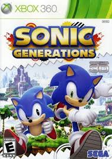Sonic Generations, released in 2011 for multiple platforms, is a celebratory title honoring the 20th anniversary of the Sonic the Hedgehog series. The game brings together two versions of Sonic—Classic Sonic, with side-scrolling 2D gameplay, and Modern Sonic, with fast-paced 3D platforming—as they team up to restore time and space distorted by a mysterious entity known as the Time Eater. Iconic levels from across the franchise’s history, such as Green Hill Zone, City Escape, and Planet Wisp, are reimagined with updated visuals and remixed music, each playable in both classic and modern styles. Sonic Generations was praised for its nostalgic value, tight controls, and refined gameplay, offering a well-balanced experience that appealed to longtime fans and newcomers alike. It remains one of the most critically acclaimed Sonic games of the modern era.
Sonic Lost World
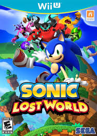Sonic Lost World, released in 2013 for the Wii U and Nintendo 3DS, features Sonic exploring the mysterious Lost Hex, a floating world where he must stop a new group of villains known as the Deadly Six, who have seized control of Dr. Eggman’s robotic army. The game introduces parkour mechanics and a more controlled running system, allowing Sonic to run along walls and navigate complex 3D environments with greater precision. Levels are designed with a cylindrical, tube-like structure, drawing comparisons to Super Mario Galaxy, and include both 2D and 3D sections. Sonic Lost World also incorporates Wisp power-ups from Sonic Colors for added variety. While the game received mixed reviews—praised for its visual style and creativity but criticized for inconsistent level design and story tone—it remains a distinctive and experimental entry in the Sonic series.
Sonic Forces
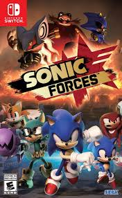Sonic Forces, released in 2017 for multiple platforms, features a darker, war-torn world where Dr. Eggman has taken over using a powerful new villain named Infinite, who can manipulate reality with the mysterious Phantom Ruby. The game follows Sonic and a resistance force led by his friends—including Classic Sonic and a customizable "Avatar" character—as they fight to reclaim the world from Eggman’s control. Gameplay is divided among three styles: Modern Sonic’s high-speed 3D stages, Classic Sonic’s 2D platforming, and the Avatar’s gadget-based levels. While Sonic Forces was praised for its graphics, music, and character customization, it received mixed reviews overall due to its short length, shallow level design, and underdeveloped story. Despite its ambitious setup, the game struggled to fully capitalize on its potential, but remains notable for its blend of fan service and experimentation.
Sonic Mania
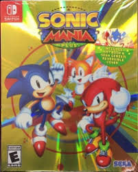Sonic Mania, released in 2017 for multiple platforms, is a critically acclaimed return to the franchise’s 2D roots, celebrating Sonic’s classic era with modern polish. Developed by a team of passionate fans and indie developers, the game features Sonic, Tails, and Knuckles as playable characters in a mix of remastered classic zones—like Green Hill and Chemical Plant—and entirely new ones, such as Studiopolis and Mirage Saloon. With tight controls, vibrant pixel art, and a catchy retro-inspired soundtrack, Sonic Mania captures the look and feel of the Genesis-era titles while introducing fresh level design and new gameplay mechanics like elemental shields and Encore Mode. Widely praised as one of the best Sonic games in years, Sonic Mania successfully reignited interest in 2D Sonic and reminded fans and critics alike of the series’ timeless appeal.
Sonic Frontiers
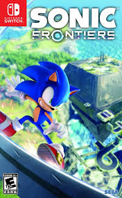Sonic Frontiers, released in 2022 for multiple platforms, marks a bold new direction for the franchise by introducing open-zone gameplay in a semi-open world format. Set across the mysterious Starfall Islands, the game follows Sonic as he searches for his lost friends and battles a new digital threat while uncovering the secrets of an ancient civilization. Combining high-speed platforming with exploration, puzzle-solving, and a more serious tone, Frontiers features expansive environments filled with enemies, mini-challenges, and hidden collectibles, alongside more traditional linear levels called "Cyber Space" stages. The game introduces a new combat system, skill tree, and deeper story elements, earning praise for its ambition and fresh take on Sonic’s formula, though it received mixed feedback on polish and pacing. Sonic Frontiers is seen as a promising reinvention that lays the groundwork for the future of 3D Sonic games.